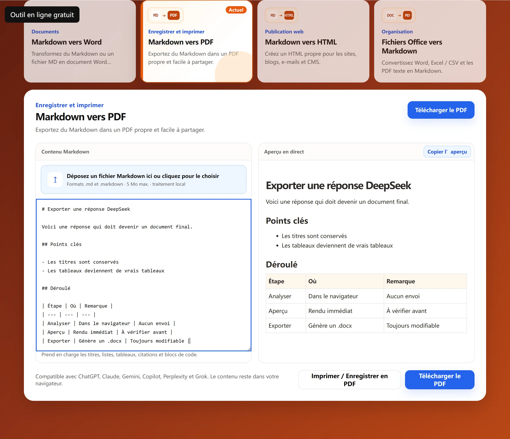

Collez ou importez votre contenu
Collez du Markdown ou le texte d'un fichier MD ; la hiérarchie des titres est conservée.
Outil en ligne gratuit
Créez un PDF propre et partageable depuis Markdown ou un fichier MD. La conversion s’effectue localement dans votre navigateur. Votre contenu n’est pas envoyé.

Comment ça marche
Collez du Markdown ou le texte d'un fichier MD ; la hiérarchie des titres est conservée.
Vérifiez le rendu des titres, listes, citations et blocs de code avant l'export.
Exportez un PDF A4 pour archiver, imprimer ou partager.
Questions fréquentes
Les fonctions de base sont gratuites et sans compte ; le contenu ne quitte pas le navigateur.
Oui. Collez le Markdown de DeepSeek, ChatGPT ou d'autres assistants et exportez-le en PDF.
Non. L'aperçu et l'export PDF s'exécutent entièrement dans le navigateur.
Oui. Les titres, listes, tableaux, citations et blocs de code sont conservés.
Limites
La version actuelle exporte uniquement en A4 portrait ; paysage et marges personnalisées ne sont pas réglables.
Les images ne font pas partie du texte copié, elles n'apparaissent donc pas dans le PDF.
Environ 186 mm de largeur de texte sont disponibles ; les tableaux à nombreuses colonnes sont compressés.
Autres outils